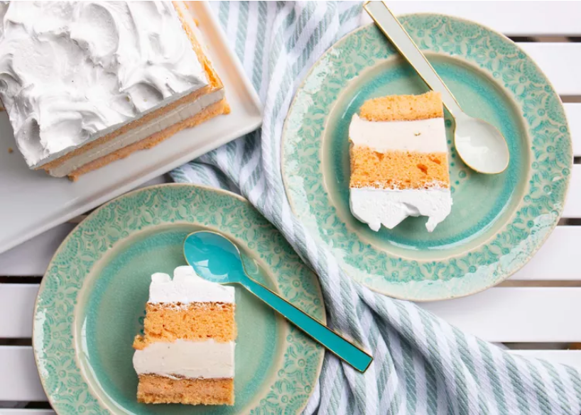

Ice Cream Cake

Description
A light and tangy cake, combining orange and vanilla ice cream flavors for the ultimate tasty treat.
Ingredient
- 1 serving cooking spray
- 1 (18.25 ounce) package orange cake mix
- 1 cup water
- 3 large eggs
- 1/3 cup vegetable oil
- 1 (1.5 quart) container vanilla ice cream
- 1 (12 ounce) container frozen whipped topping, thawed
Steps
- Preheat the oven to 350 degrees F (175 degrees C). Grease a 9x13-inch baking pan with cooking spray.
- Blend cake mix, water, eggs, and oil in a large bowl at low speed until moistened, about 30 seconds. Beat at medium speed for 2 minutes. Pour batter into the prepared pan.
- Bake in the preheated oven until a toothpick inserted into the center comes out clean, 24 to 27 minutes. Cool on a wire rack for 15 minutes before removing from the pan. Let cool completely, about 30 minutes.
- Use a serrated knife to slice off the top to create a flat surface. Slice the cake in half so you have two 9x6 1/2-inch cakes.
- Line a jelly roll pan with plastic wrap. Place one half of the cake in the pan. Cover with scoops of ice cream, pressing down gently as you go to create an even layer. It's okay if the edges aren't smooth or even.
- Place the second layer of cake on top, pressing down gently with the palm of your hand. Spread whipped topping on top of the cake. Freeze until completely frozen through, 4 to 6 hours.
- Remove the cake from the freezer and trim on all 4 sides so that you have smooth edges. Return to the freezer until ready to serve.
Sources
The recipe is taken from the allrecipes website.